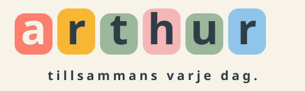

När stänger förskolan på fredag?

Ett lugnare digitalt nav för förskolan
Mindre administration.
Mer närvaro.
Ärtan samlar vardagen mellan hem, pedagoger och ledning — tryggt, tydligt och på rätt plats.
Samtalsunderlag för 14 förskolor
Utmaningen
En enkel fråga ska inte behöva bli fem system och tre samtal.
När information finns på flera platser växer letandet, dubbelarbetet och risken för missförstånd.
Vem hämtar idag?
Har alla svarat på utflykten?
Var fanns informationen om extrakläder?
Lösningen
En gemensam vardagsyta.
Tre tydliga perspektiv.
Vårdnadshavare
Ser dagens plan, schema, mat, meddelanden och det som behöver göras.
Pedagoger
Får närvaro, hämtning, kontaktvägar och kommunikation utan privata telefonnummer.
Ledning
Skapar gemensamma arbetssätt med lokal kontroll för skola, avdelning och målgrupp.
Ärtan i vardagen
Det viktigaste först.
Min dag ger ett lugnt svar på vad som händer nu — inte en ny plats att leta på.
- Dagens status och hämtning
- Mat, meddelanden och händelser
- Påminnelser när något faktiskt saknas
ärtanNova · Solen
God morgon
Nova
Min dagSchemaMeddelandenMer
Fråga Ärtan
Hjälp som hittar rätt — och aldrig låtsas veta.
Assistenten använder samma information och behörigheter som användaren. Svar har källa. Ändringar kräver granskning och bekräftelse.
Ändra alla hämtningstider den här veckan till 16:30
Ärtan
Jag kan ändra tisdag, onsdag, torsdag och fredag. Lämningstider och personer behålls.
Källa: Veckoschemat i ÄrtanFör 14 förskolor
En gemensam standard.
Utan att göra alla likadana.
Ledningen sätter ramarna. Varje förskola behåller sin organisation, sina avdelningar och sina kontaktvägar.
14förskolor
Gemensamma arbetssättLokal flexibilitetRätt målgrupp
Trygghet från början
Barnets information är inte innehåll.
Den är ett förtroende.
Rollstyrd åtkomst
Vårdnadshavare, pedagog och administratör ser bara det deras roll tillåter.
Privata ytor
Känsliga dokument och bilder hålls separerade från offentliga kanaler.
Mänsklig kontroll
Samtycken, målgrupper och viktiga ändringar avgörs av människor.
Spårbar källa
Ärtan visar var informationen kommer från och gissar inte när underlag saknas.
Fungerar i Ärtan idag
Byggd kring hela vardagen — inte en ensam funktion.
NärvaroSchema och hämtningMatsedelPrivata meddelandenOfficiella inläggHändelser och OSAPåminnelserSamtyckenPortfolioBorttappatSkoluppgifterÄrtan-assistenten
Förskolan väljer vilka ytor som ska synas. Dolda funktioner försvinner utan att uppgifter raderas.
Förslag till pilot
Börja litet.
Lär tillsammans.
Skala med bevis.
En avgränsad pilot gör det möjligt att prova arbetssättet utan att störa alla fjorton verksamheter.
- 1Välj 1–2 förskolor
Olika storlek eller arbetssätt ger bättre lärande.
- 2Sätt en tydlig vardagsyta
Närvaro, schema, meddelanden och utvalda påminnelser.
- 3Följ upp efter 6 veckor
Mät administration, tydlighet, användning och upplevd arbetsro.
- 4Besluta om nästa steg
Justera först. Skala sedan på organisationens villkor.
Nästa steg
Kan vi välja en vardag
att göra enklare tillsammans?
Vi föreslår ett arbetsmöte där vi väljer pilotförskolor, prioriterar det första flödet och sätter tydliga mått för vad som ska bli bättre.
1–2 pilotförskolor6 veckorGemensam utvärdering